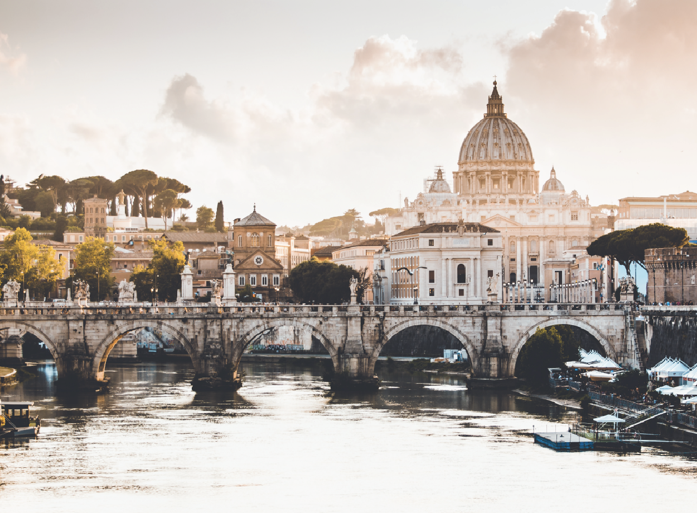

Italy - Rome
- Must See Sites:
- ■ Trevi Fountain
- ■ Colosseum
- ■ St. Peter’s Basilica
- Food:
- ■ Gelato
- ■ Pasta
- ■ Pizza
- Nightlife:
- ■ Clubs
- ■ Rooftop Bars
- Fun Facts!
- ■ Modern Rome has 280 fountains and more than 900 churches
- ■ Rome has a museum dedicated entirely to pasta
Italy - Venice
- Must See Sites:
- ■ Saint Mark's Basilica
- ■ Doge's Palace
- ■ St. Mark's Square
- Food & Drink:
- ■ Gelato!
- ■ Wine
- ■ Bakery Desserts
- Activities:
- ■ Gondola Ride
- ■ Water Taxi
- ■ Glass Blowing Demonstration
- Fun Facts!
- ■ There are 417 bridges in Venice, and 72 of those are private.
- ■ There are about 350 gondolas and 400 gondolieri in Venice.
- ■ The population of Venice has decreased from 120,000 to 60,000 in the last 50 years. Some experts believe Venice could be a ghost town by 2030 with only tourists visiting by day.